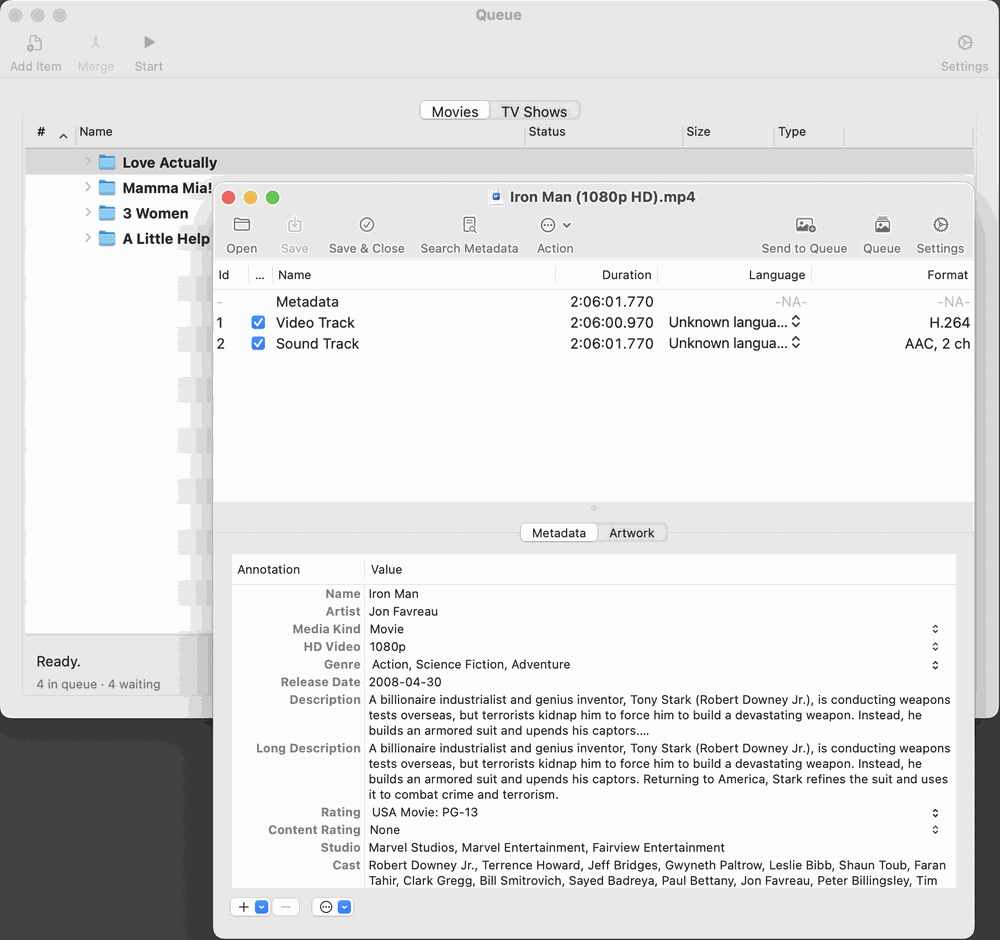

Naming Review. Shows the original folder name, how many files it holds, and an editable suggested name. A local guess appears immediately; a background search of your enabled providers refines it unless you have started typing. Buttons:
If Automatically approve high-confidence naming matches is on and the online title matches the file name exactly (and the years agree when both are known), the sheet approves itself after about a second. Typing in the field or clicking a button cancels that.
Metadata Review. Appears for a single-file release whose automatic match was not confident, or when the online search found nothing at all. It shows the match found and an artwork preview, with a Portrait / Landscape control that applies only to this release. If the match is wrong or missing, change the words in Search for and press Search (or Return), then pick the right entry from the list of results. Use This Match applies the entry you picked. If nothing can be found, Continue Without Metadata delivers the file as it is.

Merge Review. Lists the parts. Drag them into play order. The sheet starts in the order implied by the files’ own numbers (01, 02, Part 1, e1…). Confirming starts the merge.